07.31.2011 12:35
ipython 0.11 - bigger, better and bugger
ipython 0.11 looks like it is chalk full
of new features. While it looks amazing, all these changes are
giving me serious heart burn. I am going to have to package a
number of new dependencies and I just figured out how to get
virtualenv working with 0.10. Worse yet, I am begging the python
community to please stop doing weird non-standard stuff! I should
be able to run "python setup.py test" and know that the code mostly
works and I shouldn't have to install anything from the package for
that to work. There needs to be a top level README or INSTALL file
that describes how to do any additional testing.
Install instructions and What's new in Version 0.11
I'd really like to get the Qt interface going, but that's a hefty dependency to say the least.
pyzmq (ZeroMQ networking), paramiko (ssh client, packaged but needs improvement), pygments (colorizing code, needs package improvements), python readline, and exactly which qt python bindings is not obvious from the documentation.
I will also have to drop python 2.5 support when packaging ipython 0.11, but I get to add python 3.2 support.
Fink packaging contributions more than welcome!
An image from the ipython website:
Install instructions and What's new in Version 0.11
I'd really like to get the Qt interface going, but that's a hefty dependency to say the least.
pyzmq (ZeroMQ networking), paramiko (ssh client, packaged but needs improvement), pygments (colorizing code, needs package improvements), python readline, and exactly which qt python bindings is not obvious from the documentation.
I will also have to drop python 2.5 support when packaging ipython 0.11, but I get to add python 3.2 support.
Fink packaging contributions more than welcome!
An image from the ipython website:
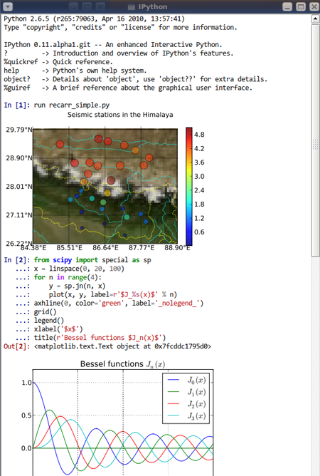
07.31.2011 00:35
NH JEL webcam - light in the housing
What I at first thought was the moon
is actually a light within the housing... still, this is a very
pretty area to be capturing. Great illustration of tides. And stick
through to the end and you will see lights reflected in the clouds
at night.
07.30.2011 17:52
socat rocks
I had the problem that I needed to
get a subset of a very high rate AIS feed out to a program that I'm
working on. I could use ssh, but that is hard to use on it's own. I
wanted to put a grep between the server getting the feed and the
outgoing data to the house I'm at that has a smaller pipe (and a
data cap that I'm putting a big dent in... I'd love to put a cap in
the new data cap trend!).
socat is netcat but just better. How? I think you have to be a bigger user of the two than I am, but socat just rocks. netcat saved our bacon on the Mars Polar Lander project until the spacecraft went splat.
My task is to connect to a TCP port, pass that data to egrep, then pass that data back out to a socket. I then connect to the port from another machine and consume the data. First, the consumption from the AIS server.
From that first command, we can use a unix pipe ("|") to pass the data from socat to an extended grep command. If you don't know how to use regular expressions with grep, you really should. Here is my grep command that I am using to filter down to only type 8 area notice whale messages coming from Cape Cod.
Now that I've got the subset of the data that I want and am getting it as soon as each line is ready, I have to pass it back to a socat to publish it.
socat FTW! And if you don't know FTW, please run
socat is netcat but just better. How? I think you have to be a bigger user of the two than I am, but socat just rocks. netcat saved our bacon on the Mars Polar Lander project until the spacecraft went splat.
My task is to connect to a TCP port, pass that data to egrep, then pass that data back out to a socket. I then connect to the port from another machine and consume the data. First, the consumption from the AIS server.
socat -u TCP:localhost:31414 -That command has a "-u" for unidirectional data... we only want to listen to the torrenct from port 31414. The "TCP:localhost:31414" says to use the reliable TCP protocol (rather than UDP datagrams, named pipes, etc) and talk to the localhost (aka 127.0.0.1) using port 31414. Then the final "-" sends the data to standard out (aka "stdout").
From that first command, we can use a unix pipe ("|") to pass the data from socat to an extended grep command. If you don't know how to use regular expressions with grep, you really should. Here is my grep command that I am using to filter down to only type 8 area notice whale messages coming from Cape Cod.
egrep --line-buffered '^!AIVDM,1,1,,[AB],803Ovrh0E.*r003669945'This goes from roughly 700 messages/sec down to 10 messages every few minutes. Therefor, I put a "--line-buffered" option in for grep to cause it to immediately pass on each line that it matches. Normally, that option is a bad idea because of the extra work put on the system by disabling buffering. Next, I have the regular expression. The "^" has it match the beginning of the line. To keep the load low, I'm trying to cause the regular expression to fail as fast as possible, so I don't want grep to work hard looking for a match later on in a line. Then I want to look for a single NMEA line (1,1) AIS message in either channel A or B that starts with the data payload of "803Ovrh0E". That string from 8 to E covers the message type, MMSI and DAC/FI for the message. After that, the ".*" says any characters up to the station name. There are several stations receiving that message and I only want to receive that particular one.
Now that I've got the subset of the data that I want and am getting it as soon as each line is ready, I have to pass it back to a socat to publish it.
socat -d -d -v -u - TCP4-LISTEN:35000I've added 3 options just after the socat. The "-d -d" double tells socat to tell me more about what is going on. I want to see when a client connects. The "-v" lets me see the data going to whoever connected. I then specified standard in (stdin) with a "-" followed by an output port of TCP4-LISTEN. That says to listen on interface 0.0.0.0 with port 35000. 0.0.0.0 means to listen on all interfaces both inside and on the network. The full command:
socat -u TCP:localhost:31414 - | egrep --line-buffered '^!AIVDM,1,1,,[AB],803Ovrh0E.*r003669945' | socat -d -d -v -u - TCP4-LISTEN:35000I can now connect in my host to fetch the data! Here is what I see (with altered IP addresses):
2011/07/30 20:07:18 socat[3773] N using stdin for reading 2011/07/30 20:07:18 socat[3773] N listening on AF=2 0.0.0.0:35000 2011/07/30 20:23:17 socat[3773] N accepting connection from AF=2 192.168.123.147:49731 on AF=2 192.168.122.190:35000 2011/07/30 20:23:17 socat[3773] N starting data transfer loop with FDs [0,0] and [4,4] > 2011/07/30 20:23:17.748626 length=8022 from=0 to=8021 !AIVDM,1,1,,A,803Ovrh0EP:0?t1002PN04da=3V<>N0000,4*56,d-085,S0400,t000810.00,T10.67040091,r003669945,1312070890\r !AIVDM,1,1,,A,803Ovrh0EP70?t1002PMwi89=MGt>N0000,4*61,d-085,S0412,t000810.00,T10.99039963,r003669945,1312070891\r !AIVDM,1,1,,B,803Ovrh0EP90?t1002PMwvgi=<;T>N0000,4*51,d-085,S0419,t000811.00,T11.17708257,r003669945,1312070891\r !AIVDM,1,1,,B,803Ovrh0EP60gt100ApMwW1i=NFt>N0000,4*0D,d-085,S0428,t000811.00,T11.41706859,r003669945,1312070891\r !AIVDM,1,1,,B,803Ovrh0EP40?t1002PMw<h1=P5D>N0000,4*33,d-085,S0463,t000812.00,T12.35041521,r003669945,1312070892\r !AIVDM,1,1,,A,803Ovrh0EP50?t1002PMwIpq=OA<>N0000,4*0F,d-085,S0487,t000812.00,T12.99038661,r003669945,1312070893\r !AIVDM,1,1,,A,803Ovrh0EP30?t1002PMvw`Q=PsD>N0000,4*53,d-085,S0492,t000813.00,T13.12374945,r003669945,1312070893\r !AIVDM,1,1,,A,803Ovrh0EP10?t1002PMvUJ1=RTd>N0000,4*3C,d-085,S0518,t000813.00,T13.81705397,r003669945,1312070893\r !AIVDM,1,1,,B,803Ovrh0EP:0?t1@02PN04da=3V<>N0000,4*25,d-085,S0388,t001010.00,T10.35038917,r003669945,1312071010\rThere is lots more I can do. I need to probably try out fork so that the setup doesn't quit when I end a connection from a client.
socat FTW! And if you don't know FTW, please run
wtf FTW
07.29.2011 11:14
Federal Initiative for Navigation Data Enhancement (FINDE)
See also:
Jan 2011 on FINDE
This program was signed back in March of the year. OCR'ed text... expect typos.
They are looking at an XML Notice to Mariners... something that
CCOM has been working on for a while.
This program was signed back in March of the year. OCR'ed text... expect typos.
The Federal Initiative for Navigation Data Enhancement (FINDE) is a joint Federal effort to provide more complete, accurate and reliable navigation information critical for providing an accurate picture of commercial cargo and vessel activity on our Nation's waterways, enforcing regulations, and making decisions regarding capital investment. ... FINDE will leverage expertise, data, and services, to the extent permitted by law, across the Internal Revenue Service (IRS), U.S. Coast Guard (USCG), and U.S. Army Corps of Engineers (USACE) to support the strategic goals of multiple Federal agencies.
| Organization Strategic Goals | Project Objectives |
|---|---|
| Provide sustainable development and integrated management of the Nation's water resources | Develop more accurate, complete and timely data sets to provide an accurate picture of our Nation's waterway infrastructure |
| Complete collection of applicable taxes | Improve identification and implement real time tracking of taxable commodities |
| Ensure that projects perform to meet authorized purposes and evolving | Maintain a reliable waterway infrastructure by using accurate conditions performance measures to manage Corps projects |
| Maintain the safety and security of waterways and harbors | Integrate AIS data with other data sources. Develop USCG capability to receive inout data from USACE. |
07.27.2011 22:50
GeoCouch
Frank and I attended a GeoCouch meetup in the
city today. I'm wondering how it would do with AIS with lots of
ship position updates.
CouchDB is a NoSQL database. CouchDB pod cast
There were a couple of other interesting things that I had not heard of before: Open Search Geo 1.0 Draft 1 and MapQuery - combining jQuery and OpenLayers
CouchDB is a NoSQL database. CouchDB pod cast
There were a couple of other interesting things that I had not heard of before: Open Search Geo 1.0 Draft 1 and MapQuery - combining jQuery and OpenLayers
07.27.2011 15:28
Okeanous Explorer live mapping of multibeam
OE Live Video
You can watch multibeam collection live... this is what we see when you are on a 12 hour watch collecting multibeam. This is pretty amazing that the ship is collecting full water column in addition to the bathymetry.
You can watch multibeam collection live... this is what we see when you are on a 12 hour watch collecting multibeam. This is pretty amazing that the ship is collecting full water column in addition to the bathymetry.
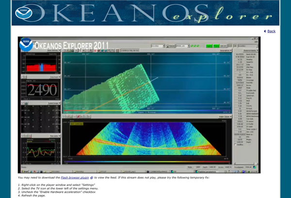
07.26.2011 16:36
Bing on the iPad
Bing on the iPad is slick! Microsoft
on Apple at Google. All in one post. Weird.
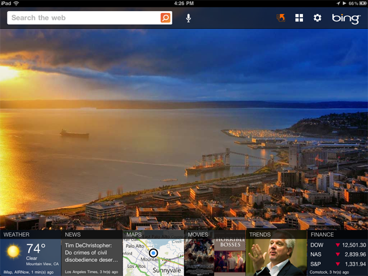
07.26.2011 11:49
Google Ocean video
Narated by Jenifer at Google - a nice
tour of the bathymetry in Google Earth.
Updates are available as posted by Matt Manolides and reshared by Mano Marks in g+.
imagery_updates.kml (http://goo.gl/H7PaG)
Updates are available as posted by Matt Manolides and reshared by Mano Marks in g+.
imagery_updates.kml (http://goo.gl/H7PaG)
07.24.2011 22:25
quote: the code only has to run once
It is almost never true that code
only has to be run once. If that is true for scientific code, then
the scientific method has failed. Reproducability is then lost.
Being able to show with successful tests that a code does the right
thing is essential, but almost never done.
Software exoskeletons [johndcook.com] was referenced on slashdot...
'The Code Has Already Been Written'
Bad code == results in the short term, but those results should be considered worthless in the long run. When you are just learning, the rough/bad code is okay, but if those results are to be used for anything, you need code that has a least some minimum standards.
Software exoskeletons [johndcook.com] was referenced on slashdot...
'The Code Has Already Been Written'
Bad code == results in the short term, but those results should be considered worthless in the long run. When you are just learning, the rough/bad code is okay, but if those results are to be used for anything, you need code that has a least some minimum standards.
07.24.2011 12:12
Gigapan Timemachine
I had a great chat with Anne and
Randy last week. Randy pointed me to a very awesome gigapan
feature: Time Machine
that has serious science and teaching potential. It only works in
Safari and Chrome at the moment. e.g.
Plant Growth
Plant Growth
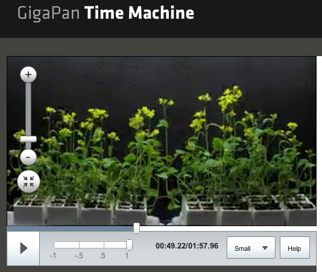
07.23.2011 10:06
Right whale sighting alert system - web map
NOAA in Woods Hole has just released
a web map version right whale sightings using the database cleaning
work that I did along with my right whale icon. The team at NOAA
has been working hard to collect this data for the last 10
years.
{Update} New Interactive Google Map!!! [Christin Khan]
The web map is at: PSB: NARWSS and SAS.
{Update} New Interactive Google Map!!! [Christin Khan]
The web map is at: PSB: NARWSS and SAS.
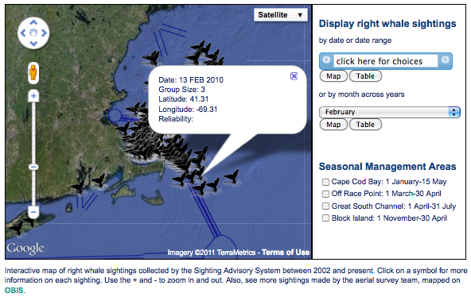
07.21.2011 08:20
killall versus pkill - NAIS start script
In trying to keep up with the pace of
too many projects going too fast, I'm trying to script things that
are eating my time. When my NAIS connection goes down (not hard,
but twisted), I have to kill the java client application and
restart it. It's not difficult, but it takes time and the process
of remembering how to do that impinges on everything else I'm
trying to hold in my short term memory (refreshing from org-mode
notes, calendars, and postits takes time). I have always been wary
of killall. On some unix systems, killall takes out everything in
preparation for shutdown. That doesn't seem to be the common
behavior anymore (was that SunOS 4.x?), but I can't seem to get
over it. However, there are the two commands pkill and pgrep. The
best part is that you can use pgrep in all kinds of scripts.
The key to pgrep/pkill for me are two options. First, "-f" extends searching to the arguments of the command line. I need to kill a specific java instance, not all of them. Second, "-u" lets me constrain the operation to a specific user. That makes me feel safer. If I run a daemon as something other than root (which is what we all should be doing 99% of the time), then we can be sure to not bring down the house.
In my script, I have to use nohup because the USCG code is not a proper daemon. I've added a bit to push the old nohup.out into a log directory, change the filename to include a timestamp, and compress the file. It's a bummer that AISUser does not use any of the upper powerful java facilities for advanced logging, monitoring, and general daemon/server functionality. If only I could connect to a messaging bus and get notifications from the client as it negotiates network changes, tracks data rates, etc.
"Faster, better, cheaper." -NASA Administrator circa 1998. "Pick two. Or, why not Linux?" -Me circa 1999
Or I could have written a proper init script, but I definitely do not have the time to do that right. I wish there were an init script crafter for each of the many OSes, where I can answer a couple questions and get a basic init script to start with? What user do I want to run this under? What's the command line to start? To stop? Or use killall/pkill? Need any additional path tweaks?
Interesting see alsos: run-one for Ubuntu is a nice little shell scripts that Dan Ca. pointed me to. There is also the launch replacement for open on the mac.
The key to pgrep/pkill for me are two options. First, "-f" extends searching to the arguments of the command line. I need to kill a specific java instance, not all of them. Second, "-u" lets me constrain the operation to a specific user. That makes me feel safer. If I run a daemon as something other than root (which is what we all should be doing 99% of the time), then we can be sure to not bring down the house.
In my script, I have to use nohup because the USCG code is not a proper daemon. I've added a bit to push the old nohup.out into a log directory, change the filename to include a timestamp, and compress the file. It's a bummer that AISUser does not use any of the upper powerful java facilities for advanced logging, monitoring, and general daemon/server functionality. If only I could connect to a messaging bus and get notifications from the client as it negotiates network changes, tracks data rates, etc.
#!/bin/bash pkill -u $USER -f AISUser NOHUP=nohup.out-`date +%Y%m%dT%H%M` mv nohup.out logs/$NOHUP # Might take a while nohup bzip2 -9 logs/$NOHUP & # Let the USCG connection settle sleep 2 nohup java -jar AISUser.jar &It's very much a bummer that pkill and pgrep (aka procps are not available on Mac OSX or in fink. They operate on the /proc filesystem that isn't available on the Mac, so it would involve writing new code, not just a port.
"Faster, better, cheaper." -NASA Administrator circa 1998. "Pick two. Or, why not Linux?" -Me circa 1999
Or I could have written a proper init script, but I definitely do not have the time to do that right. I wish there were an init script crafter for each of the many OSes, where I can answer a couple questions and get a basic init script to start with? What user do I want to run this under? What's the command line to start? To stop? Or use killall/pkill? Need any additional path tweaks?
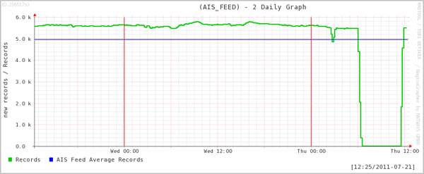
Interesting see alsos: run-one for Ubuntu is a nice little shell scripts that Dan Ca. pointed me to. There is also the launch replacement for open on the mac.
07.20.2011 15:46
Speeding up queries in a static database
I've got a midsized database (for me
at least) and I'm doing some basic queries again and again that are
slow even with indexes. I figured I should be able to knock out a
little python function that checks to see if that query has been
done before and if so, reuse the old results. This could be a lot
fancier... I could hash the query string and use that rather than
making the caller remember a name for the query, but this is what I
could get done in a couple minutes and the results are awesome. The
function checks for a python pickle file. If it successfully loads
the pickle, it returns the data. If it fails, it does the query,
saves a pickle to disk, and returns a list of rows with each row as
a dictionary.
You could use stat to check the age of the database and the pickle if you were worried that the database might change.
You could use stat to check the age of the database and the pickle if you were worried that the database might change.
import sqlite3, cPickle as pickle
cx = sqlite3.connect('data.sqlite3')
cx.row_factory = sqlite3.Row
def sqlite_query_cached_dict(cx, query_name, sql):
try:
infile = open('cache_'+str(query_name)+'.pickle')
data = pickle.load(infile)
print 'Used cache'
return data
except:
pass
# No cache, so do the query
data = [dict(row) for row in cx.execute(sql)];
outfile = open('cache_'+str(query_name)+'.pickle', 'w')
pickle.dump(data, outfile)
print 'Fresh data -> wrote cache'
return data
# Your work here
07.17.2011 13:45
Testing and collaboration
And this is why working by yourself
totally sucks. Since last year, I've noticed ships in ERMA with
shipandcargo/type_and_cargo greater than 100. Trouble is that I was
given a draft USCG AIS setup sheet to review and it had
type_and_cargo values over 100 on it. So I assumed that I was
seeing these in use. WRONG!
I'm working on some data analysis for tomorrow and git one of these again, but this time I was setup to dump the NMEA and compare. libais was giving 241. Here is the message decoded in noaadata:
This bug has been in a user facing interface for more than a year and used as the COP for Deepwater Horizon. Nobody ever said anything. Shame on me for the lack of testing and shame on the responders for mindlessly using the tool.
libais lives in github, so there is now a place to submit issues: https://github.com/schwehr/libais/issues
See also: commit eb4644ee34e7656e901fe43fb24e8f85ca636eae
And there still are vessels with their shipandcargo>100:
I'm working on some data analysis for tomorrow and git one of these again, but this time I was setup to dump the NMEA and compare. libais was giving 241. Here is the message decoded in noaadata:
./ais_msg_5.py -d '!AIVDM,1,1,3,A,53f<sj0281hWTP7;335`tM84HT62222222222216BpN:D0Ud0K0S0@jp4i@H88888888880,2*05,1296517901'
shipdata:
MessageID: 5
RepeatIndicator: 0
UserID: 249773000
AISversion: 0
IMOnumber: 8914697
callsign: 9HA2001
name: ZOGRAFIA
shipandcargo: 70
dimA: 151
dimB: 30
dimC: 10
dimD: 20
Looking at ais5.cpp, here is the code that I had:
name = ais_str(bs, 112, 120);
type_and_cargo = ubits(bs, 120, 8);
dim_a = ubits(bs, 240, 9);
That was seriously wrong! name starts at bit 112 and is 120 bits
long. I was tired when I wrote that code and did not have a test
harness ready. type_and_cargo should have started at 112+120! I now
have this line:
type_and_cargo = ubits(bs, 232, 8);
And life is better. This bug has been in there since 2010-May-03.
Having a team mate that understands what you are doing and looks
over what you do and writing test cases is priceless. I'm sure
there are lots of other issues like this lurking in libais.
This bug has been in a user facing interface for more than a year and used as the COP for Deepwater Horizon. Nobody ever said anything. Shame on me for the lack of testing and shame on the responders for mindlessly using the tool.
libais lives in github, so there is now a place to submit issues: https://github.com/schwehr/libais/issues
See also: commit eb4644ee34e7656e901fe43fb24e8f85ca636eae
And there still are vessels with their shipandcargo>100:
./ais_msg_5.py -d '!AIVDM,1,1,3,B,544aRB023Op=D8hGT00hTp@Lthl0000000000;Rd30f2840000000000000000000000000,2*32,1296510715'
shipdata:
MessageID: 5
RepeatIndicator: 0
UserID: 273310280
AISversion: 0
IMOnumber: 8617859
callsign: UBLE9@@
name: LINDGOLM@@@@@@@@@@B8
shipandcargo: 172
dimA: 24
dimB: 46
dimC: 2
dimD: 8
fixtype: 1
ETAmonth: 0
ETAday: 0
ETAhour: 0
ETAminute: 0
draught: 0
07.17.2011 10:28
One person AIS shop
I am basically a one person AIS shop.
I get some occasional help from Andy & Jordan at CCOM, NOAA,
USCG, and a few other folks, but it really is just up to me to
survey the systems and processes. I thought it would be good to
share this graph that basically shows how well (or not well) I keep
up with things.
Even with troubles, I've got 735GB of compressed AIS data that corresponds to roughly 3-4TB of uncompressed NMEA data. Big by some standards, but small when I thing about what I see with midwater multibeam systems.
In this graph, I see lots and lots of data gaps. This comes from the fact that I haven't had time and energy to setup better nagios tracking of processes to catch problems and engineer solutions to problems that I know exist. In the green graph, you can also see me working with the USCG to balance the load on a server. The first step at day ~110 is when I switched the feed from just New England and Peurto Rico to the gulf of Mexico. Then at roughly day 300, I switched ERMA to getting all of the entire NAIS feed. The difference between the green and red lines are that my feed in red is getting as much of the NAIS data as possible, whereas the green line for ERMA has the USCG apply their duplicate removing algorithm before forwarding the data to UNH.
This graph is strong argument for NOAA to have a data center log, archive and ship data from a location with better internet connectivity, power, and staffing than the two server rooms at UNH where I house these two feeds. For a lot of what people are doing, they just need easy access to daily logs. Those could be compressed and distributed nightly from a NOAA center with much less hassle.
Even with troubles, I've got 735GB of compressed AIS data that corresponds to roughly 3-4TB of uncompressed NMEA data. Big by some standards, but small when I thing about what I see with midwater multibeam systems.
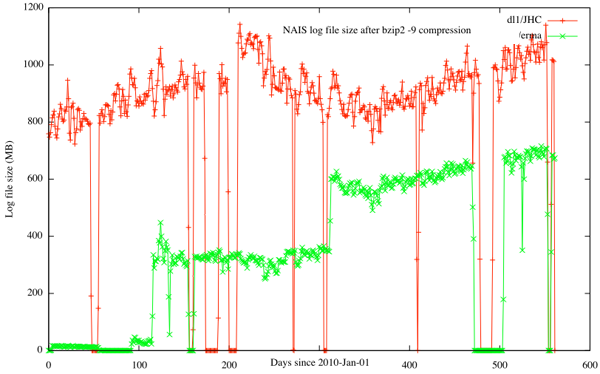
In this graph, I see lots and lots of data gaps. This comes from the fact that I haven't had time and energy to setup better nagios tracking of processes to catch problems and engineer solutions to problems that I know exist. In the green graph, you can also see me working with the USCG to balance the load on a server. The first step at day ~110 is when I switched the feed from just New England and Peurto Rico to the gulf of Mexico. Then at roughly day 300, I switched ERMA to getting all of the entire NAIS feed. The difference between the green and red lines are that my feed in red is getting as much of the NAIS data as possible, whereas the green line for ERMA has the USCG apply their duplicate removing algorithm before forwarding the data to UNH.
This graph is strong argument for NOAA to have a data center log, archive and ship data from a location with better internet connectivity, power, and staffing than the two server rooms at UNH where I house these two feeds. For a lot of what people are doing, they just need easy access to daily logs. Those could be compressed and distributed nightly from a NOAA center with much less hassle.
07.15.2011 17:39
virtualenv for python
Update 2011-Jul-26: I've submitted a
first patch back to PyKML for getting the samples up to the current
API. There is still some work to do before I can pass back another
patch that will make handling coordinates a lot easier.
I have been trying to figure out PyKML without success. I thought I would try to back up and go with the installation instruction pages, but I don't want to let easy_install at my system or fink installed pythons. I've been following a number of blogs where they describe using virtualenv to create a small play area that they can let easy_install run wild. When they are done, they just nuke that tree of files and they are back to where they were at the start.
I figured it was time to finally give it a try. At least then I can have a little more info for a bug report to the author (who I am hoping to meet next week). I just put virtualenv and yolk into fink.
While I have a virtualenv setup, I might as well try out a package that shows what python packages are installed.
Then I can undo everything I did.
I read up on some of this stuff here while trying out virtualenv and yolk: SimonOnSoftware's Virtualenv Tutorial
My pykml troubles have been submitted as Issue 3: No module named kml_gx
I have been trying to figure out PyKML without success. I thought I would try to back up and go with the installation instruction pages, but I don't want to let easy_install at my system or fink installed pythons. I've been following a number of blogs where they describe using virtualenv to create a small play area that they can let easy_install run wild. When they are done, they just nuke that tree of files and they are back to where they were at the start.
I figured it was time to finally give it a try. At least then I can have a little more info for a bug report to the author (who I am hoping to meet next week). I just put virtualenv and yolk into fink.
fink selfupdate fink install virtualenv-py27 cd ~/Desktop mkdir virt_env virtualenv virt_env/virt1 source virt_env/virt1/bin/activate easy_install pykml hg clone https://code.google.com/p/pykml/ pykml cd pykml/src/examplesNow I've got pykml installed. Time to give it a try.
python gxtrack.py
Traceback (most recent call last):
File "gxtrack.py", line 9, in <module>
from pykml.kml_gx import schema
ImportError: No module named kml_gx
(virt1)
Okay, no luck. That's the same error that I've been getting since
yesterday. I was assuming that there was something I was missing
with the packaging.While I have a virtualenv setup, I might as well try out a package that shows what python packages are installed.
easy_install yolk yolk -l BeautifulSoup - 3.0.7a - active development (/sw32/lib/python2.7/site-packages) BitVector - 3.0 - active development (/sw32/lib/python2.7/site-packages) Django - 1.3 - active development (/sw32/lib/python2.7/site-packages) FormEncode - 1.2.4 - active development (/sw32/lib/python2.7/site-packages) Jinja2 - 2.5.5 - active development (/sw32/lib/python2.7/site-packages) Magic file extensions - 0.2 - active development (/sw32/lib/python2.7/site-packages) Numeric - 24.2 - active development (/sw32/lib/python2.7/site-packages/Numeric) PyYAML - 3.09 - active development (/sw32/lib/python2.7/site-packages) Pygments - 1.3.1 - active development (/sw32/lib/python2.7/site-packages) Python - 2.7.2 - active development (/sw32/lib/python2.7/lib-dynload) ...Handy package. Yolk can also query PyPi. Here I am checking to see which installed python packages have updates available on pypi. Handy for a fink packager! Errr... this shows that I am behind on a good number of packages. Bummer.
yolk -U BeautifulSoup 3.0.7a (3.2.0) PyYAML 3.09 (3.10) Pygments 1.3.1 (1.4) Sphinx 1.0.5 (1.0.7) docutils 0.7 (0.8) hgsubversion 1.2 (1.2.1) ipython 0.10 (0.10.2) logilab-common 0.55.0 (0.56.0) nose 0.11.4 (1.0.0) pexpect 2.3 (2.4) psycopg2 2.4 (2.4.2) ...I've been thinking about writing a script that uses the pypi entry for a program to generate a rough draft fink python info page. Yolk clearly does something pretty similar. That would still leave a good number of packaging issues to finish up, but things like the SourceURL, MD5, Description and so forth could be filled in. Logically following that is to query fink to list only the packages in fink that are out of date for which I'm the maintainer, possibly with the option to update the URL, MD5 and Version as a draft.
Then I can undo everything I did.
(virt1) deactivate rm -rf virt_env/virt1That virtual environment is history.
I read up on some of this stuff here while trying out virtualenv and yolk: SimonOnSoftware's Virtualenv Tutorial
My pykml troubles have been submitted as Issue 3: No module named kml_gx
07.15.2011 08:46
Visiting Google
For the next couple weeks, I'm a
Visiting Faculty/Contractor at Google in the Oceans team.
Googlers:
This is an open invitation for any Googlers to come chat with me. The goals for my time here are many and I've only got a short time. I'd like to maximize the amount that I can accomplish with Google. So if you are up for talking about Oceans, Earth, Fusion Tables, Refine, python, pykml, gdal, AIS, marine anything, testing, teaching, science, geology, geophysics, Mars, emacs org-mode, spatial databases or your topic of choice... please get in touch with me or stop by. I'm currently office surfing on Peter Birch's desk in GWC 1 Room 264. I'm up meeting people over breakfast, lunch, dinner, or when ever. I'm badged but still trying to get oriented.
Non-Googlers:
I can only talk about some of what is going on here. I'm under NDA and that restricts some topics a bit.
Googlers:
This is an open invitation for any Googlers to come chat with me. The goals for my time here are many and I've only got a short time. I'd like to maximize the amount that I can accomplish with Google. So if you are up for talking about Oceans, Earth, Fusion Tables, Refine, python, pykml, gdal, AIS, marine anything, testing, teaching, science, geology, geophysics, Mars, emacs org-mode, spatial databases or your topic of choice... please get in touch with me or stop by. I'm currently office surfing on Peter Birch's desk in GWC 1 Room 264. I'm up meeting people over breakfast, lunch, dinner, or when ever. I'm badged but still trying to get oriented.
Non-Googlers:
I can only talk about some of what is going on here. I'm under NDA and that restricts some topics a bit.
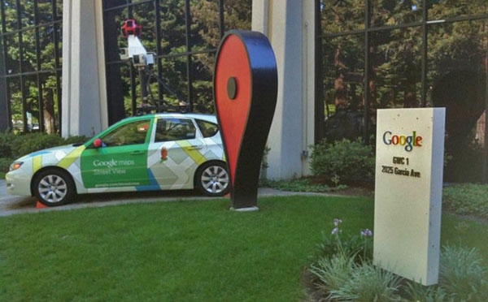
07.14.2011 18:26
AK program on oil spill technology
Oil spill prevention technology center planned for UAF
The University of Alaska Fairbanks is planning the formation of a science and technology center for oil spill prevention and preparedness in the Arctic, Mark Myers, vice chancellor for research at UAF, told Petroleum News June 15. ... UAF is making a pre-proposal to the National Science Foundation, seeking funding of $5 million per year to support the new center, and will also seek funding from other partners. ... Rather than duplicating research already in progress on traditional oil spill response technologies such as oil skimmers and booms, the new center will particularly focus on new, small-scale technologies that have the potential to transform people's abilities to deal with Arctic oil spill challenges, Myers said. Example technologies include unmanned aerial vehicles with optical, infrared, radar and other sensing systems; unmanned underwater vehicles; surface radar systems with portable power supplies; and the remote sensing of ice conditions through cloud cover using radar technology. ...
07.13.2011 21:21
Google I/O Video - Sean and Mano on KML
A very interesting video on features
I've yet to use in KML/GoogleEarth... I just met Sean yesterday for
the first time and I've been talking to Mano for a couple
years.
I've got a while pile of videos to watch, but I figured this one would be great to start with.
See also Rich's post on this video: Google IO 2011
I've got a while pile of videos to watch, but I figured this one would be great to start with.
See also Rich's post on this video: Google IO 2011
07.12.2011 07:31
Ocean Blueprint - Philippe Cousteau and the NRDC
Philippe Cousteau's put out several
videos on the NRDC youtube channel. This one talks about the Hudson
Canyon: Ocean
Oases. This one works well with Nikki's recent masters defense.
Congrats Nikki on your new MS degree!
He also has Oceanblueprint, which talks about the Stellwagen Bank National Marine Sanctuary and the shipping lane coming in to Boston with the new LNG terminals. I can't figure out why this video is unlisted. It also features Adm. Thad Allen.
I like that he is standing at the SIO MarFac (Marine Facilities) out at Point Loma with San Diego in the background.
He also has Oceanblueprint, which talks about the Stellwagen Bank National Marine Sanctuary and the shipping lane coming in to Boston with the new LNG terminals. I can't figure out why this video is unlisted. It also features Adm. Thad Allen.
I like that he is standing at the SIO MarFac (Marine Facilities) out at Point Loma with San Diego in the background.
07.12.2011 00:57
org-mode 7.6 - now with BibTex support
I don't have the time to check it all
out right now, but org-mode 7.6 is out... and one of the new
features is bibtex support! Woot! Now I need to find time and
create org-spatial for tagging entrys with location and org-kml to
export those entries with location and time to KML. Figuring out
the timezone of entries might be possible with location, but it
will likely just have to be a user setting.
Provides support for managing bibtex bibliographical references data in headline properties. Each headline corresponds to a single reference and the relevant bibliographic meta-data is stored in headline properties, leaving the body of the headline free to hold notes and comments. Org-bibtex is aware of all standard bibtex reference types and fields.The announcement: Release 7.6
07.11.2011 21:35
NOAA Deepwater Horizon video
NOAA just released a short video on
the Deepwater Horizon oil spill (DWH) last week. I noticed in the
video that all the maps are printouts and the people doing data
entry are writing on paper forms in the plane. No wonder the data
took forever to get anywhere.
I see that they included Larry Mayer's voice and some images from Fledermaus, but no ERMA or GeoPlatform.
There was also a nice article about the NOAA Ship Fairweather heading out for survey's in Alaska:
NOAA Ship Fairweather sets sail to map areas of the Arctic
I see that they included Larry Mayer's voice and some images from Fledermaus, but no ERMA or GeoPlatform.
There was also a nice article about the NOAA Ship Fairweather heading out for survey's in Alaska:
NOAA Ship Fairweather sets sail to map areas of the Arctic
... Over the next two months, Fairweather will conduct hydrographic surveys covering 402 square nautical miles of navigationally significant waters in Kotzebue Sound, a regional distribution hub in northwestern Alaska in the Arctic Circle. "The reduction in Arctic ice coverage is leading over time to a growth of vessel traffic in the Arctic, and this growth is driving an increase in maritime concerns," explained NOAA Corps Capt. David Neander, commanding officer of the Fairweather. "Starting in 2010, we began surveying in critical Arctic areas where marine transportation dynamics are changing rapidly. These areas are increasingly transited by the offshore oil and gas industry, cruise liners, military craft, tugs and barges and fishing vessels." Fairweather and her survey launches are equipped with state-of-the-art acoustic technology to measure ocean depths, collect 3-D imagery of the seafloor, and detect underwater hazards that could pose a danger to surface vessels. The ship itself will survey the deeper waters, while the launches work in shallow areas. ...And, while I haven't yet read any of the pdfs on http://www.imca-int.com/divisions/survey/publications/, the IMCA S 012: Guidelines on installation and maintenance of DGNSS-based positioning systems and IMCA S 015: Guidelines for GNSS positioning in the oil & gas industry might be useful reports.
07.11.2011 12:32
NAIS for ERMA / GeoPlatform is down
UPDATE 2011-Jul-12 08:30AM EDT: NAIS services to ERMA and GeoPlatform are working again. No idea what got fixed last night somewhere before when Tony reported the link fixed at 7:30 AM.
An update on ERMA and GeoPlatform AIS plots of vessels: On Friday, something in the Internet between the USCG NAIS Operations Center and the University of New Hampshire change. The UNH networking team found that there was strange Border Gateway Protocol (BGP) things going on. The UNH team tried out forcing static routing, but that is not a good idea.
I haven't been able to completely follow the discussion, but all of the ERMA sites and Geoplatform/Gulfresponse pull their NAIS feed through the same route and as such, we haven't updated vessel positions since Friday morning.
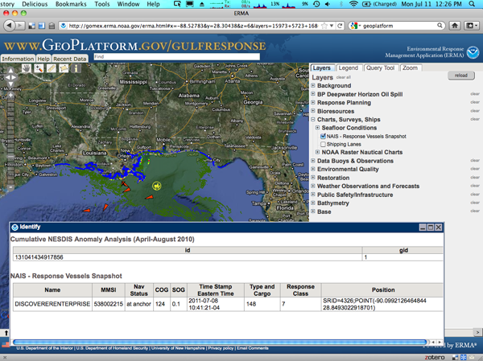
This image also shows that there is something wrong with the ship database aging. It's now Monday and vessel with positions older than 12 hours should not be displayed. The Discoverer Enterprise is shown with a timestamp for Friday at 10:41AM EDT.
I am not sure why NAIS and Shipping lanes got moved to "Seafloor Conditions."
07.10.2011 19:42
Storm photography from a plane
If you follow my blog, you will
likely know that I take a lot of pictures from planes. This
evening, one of the stewards got on the PA and said, "For those of
you who asked earlier, here it is." That was it. About 5 minutes
later, the plane banked hard and this is what I saw. Too bad I
could not better capture the lighting in the storm. Sunset
definitely added to the storm. Looking west:
As we passed around the store, we got an amazing view with the sun setting off to the left. I tried hard to capture the lightening with the iPhone camera, but no luck. I got a good number of blurry photos from all the turbulance, and there are speckles of ice crystals on the bottom half of the window that I did not notice.
However, shooting a video, I captured the lightening a bit!
As we passed around the store, we got an amazing view with the sun setting off to the left. I tried hard to capture the lightening with the iPhone camera, but no luck. I got a good number of blurry photos from all the turbulance, and there are speckles of ice crystals on the bottom half of the window that I did not notice.
However, shooting a video, I captured the lightening a bit!
07.10.2011 16:54
Photography
It has been a while since I posted a
good batch of pictures. The garden is really running wild with
herbs and we've only done a little bit of maintenance, so I am
going to stick to photos from elsewhere.
I finally broke out the Canoe that we got from Maria and Eduardo (thanks guys!) Now that I've got it figured out how to get it on and off of the car by myself, I've gone on a number of morning paddles leaving the shore in the time frame of 6-7AM.
Back on June 21st, I did my first canoe around Belamy Reservoir going to the north-east corner of the lake. I saw 3 good sized beaver homes and one kayaker.
This was the start of the lilipad flower season. There were awesome yellow and pink flowers in addition to white. Unfortunately, the white flowers were bright enough compared to the pads and the water to completely saturate my iPhone 3GS camera. I haven't tried an empty dunk test (I really should), but I feel pretty comfortable with the small otter box we got to keep wallet, cell phone, and car keys dry.
I got another trip in to Boulder recently. Monica and I captured some nice images at sunrise on our last day. The clouds prevented a real sunrise, but it was still a very nice morning!
I have been wanting to paddle on the Cocheco River for a long time. There is a stretch upstream of the Dover dam that is pretty still if there hasn't been any recent storms. It's a pretty good distance. However, with the water down roughly 1-2 feet, there is a lot of mud and some trash exposed above the water line. Despite that, it has some really pretty spots.
Early morning is definitely a great time to be out on the water!
The falls at the upper end of this area are pretty minimal compared to spring and after storms.
To make my life easier when posting images, I finally got around to writing an emacs yasnippet (yas) for my nanoblogger setup. BTW, while I love the concept of nanoblogger, I really need to switch to a different blog engine. Inserting images and marked up code is a real pain. I hate that I'm inserting html and not just tagging a block as code in a certain language.
I finally broke out the Canoe that we got from Maria and Eduardo (thanks guys!) Now that I've got it figured out how to get it on and off of the car by myself, I've gone on a number of morning paddles leaving the shore in the time frame of 6-7AM.
Back on June 21st, I did my first canoe around Belamy Reservoir going to the north-east corner of the lake. I saw 3 good sized beaver homes and one kayaker.
This was the start of the lilipad flower season. There were awesome yellow and pink flowers in addition to white. Unfortunately, the white flowers were bright enough compared to the pads and the water to completely saturate my iPhone 3GS camera. I haven't tried an empty dunk test (I really should), but I feel pretty comfortable with the small otter box we got to keep wallet, cell phone, and car keys dry.
I got another trip in to Boulder recently. Monica and I captured some nice images at sunrise on our last day. The clouds prevented a real sunrise, but it was still a very nice morning!
I have been wanting to paddle on the Cocheco River for a long time. There is a stretch upstream of the Dover dam that is pretty still if there hasn't been any recent storms. It's a pretty good distance. However, with the water down roughly 1-2 feet, there is a lot of mud and some trash exposed above the water line. Despite that, it has some really pretty spots.
Early morning is definitely a great time to be out on the water!
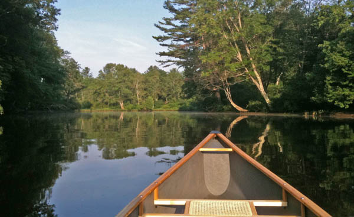
The falls at the upper end of this area are pretty minimal compared to spring and after storms.
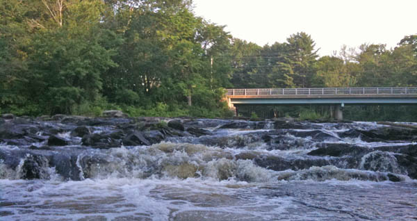
To make my life easier when posting images, I finally got around to writing an emacs yasnippet (yas) for my nanoblogger setup. BTW, while I love the concept of nanoblogger, I really need to switch to a different blog engine. Inserting images and marked up code is a real pain. I hate that I'm inserting html and not just tagging a block as code in a certain language.
# -*- snippet -*- # key: img # name: blog-image # contributor: Kurt Schwehr # -- <img title="$1" withgrayborder="True" src="../attachments/`(format-time-string "%Y-%m" (current-time))`/$2"/>
07.09.2011 09:10
AIS marine mammal workshop this fall
In additional to the annual eNavigation (eNav; formerly
"AIS") conference in Seattle in November, I just found out about
this workshop at the
19th Biennial Conference on the Biology of Marine Mammals in
Tampa FL that has a great description. The two conferences are
right on top of each other, but the workshops are 3 days before
eNav:
Workshops
The maritime Automatic Identification System: harnessing its potential for marine mammal research
The maritime Automatic Identification System: harnessing its potential for marine mammal research
Date: Sat Nov 26 Duration: Afternoon Room: #10 Cost: Free Organizer: Mark Mueller Organizer email: mark DOT mueller AT myfwc.com Description: The Automatic Identification System (AIS) implemented by the International Maritime Organization allows real time tracking of commercial vessels. AIS can be used to monitor ship traffic in any area by establishing a relatively inexpensive receiving system. When used effectively and with a practical understanding of its limitations, AIS data can be a powerful tool to answer research questions and inform conservation management efforts. Researchers studying a broad array of marine mammals that share habitat with large vessels can benefit from usage of AIS, from large whales that risk serious injury or mortality due to ship strikes, to numerous other cetaceans and pinnipeds near ports and high vessel traffic corridors that are potentially affected by the indirect but cumulative impacts of acoustic disturbance. Agenda: 1) Overview of the AIS system including original goals and reasons for its development (e.g., safety of navigation through improved awareness and communication), carriage requirements and data fields, both mandatory (such as vessel identifiers and dimensions) and optional (voyage-specific information such as destination and ETA). An evaluation of trends in implementation of the envisioned AIS standard will be given. 2) A review of some of the existing hardware and commercial software options for establishing AIS data collection, with lessons learned from existing projects and specific tips to assist those wishing to start their own receiving stations for data collection. 3) Examples of data processing and QA/QC methods and software programs that can be used. These will include specific techniques that can be used to reduce the large volume of redundant data, filter out problematic data (e.g., GPS and/or transmission errors), and to identify erroneous vessel characteristic information and (optionally) correct it using freely available vessel information databases. 4) Case studies. Real-world examples of AIS data being used in marine mammal research and management, e.g., for monitoring vessel traffic patterns and evaluating compliance with management measures such as speed limitations and recommended routing. Issues involving mariner outreach and education and the potential for risk evaluation may be discussed.
07.08.2011 07:28
Delicious for Firefox 5
For those like me who didn't know...
there is a new different firefox plugin for delicious.com:
Delicious Extension.
My goatbar delicious bookmark's. I have been considering switching to Google Bookmarks.
Delicious Firefox 5.0 Extension (Beta) integrates your bookmarks and tags with Firefox and syncs them for convenient access. For more information, go to: www.avos.com/termsAnd don't forget to regularly backup your bookmarks: https://secure.delicious.com/settings/bookmarks/export.
My goatbar delicious bookmark's. I have been considering switching to Google Bookmarks.
07.07.2011 14:48
Moore Up North Episode 219 - Jan 2011
I was in the audience having a beer
during this episode of Moore Up North:
Moore Up North Episode 219 - Alaska Marine Science Symposium (January 20, 2011)
Moore Up North Episode 219 - Alaska Marine Science Symposium (January 20, 2011)
PANEL Dr. Philip McGillivary is the PAC AREA Icebreaker Science Liaison with the United States Coast Guard. He spent last summer responding to the Deepwater Horizon Gulf of Mexico Catastrophe. Rick Steiner is a Marine Conservation and Sustainability Consultant, an oil spill response expert, and he also spent the summer responding to the Deepwater Horizon Gulf of Mexico oil spill. He was Cook Inlet Keeper's 2010 Muckraker of the Year. Stanley Senner is the Director of Conservation Science with Ocean Conservancy. He has more than thirty years of experience in ornithology and in the fields of natural resources and wildlife conservation policy. Senner served as the science coordinator for the Anchorage-based Exxon Valdez Oil Spill Trustee Council and also spent his summer trekking around the Gulf of Mexico.
07.06.2011 15:23
Facebook video chat
I just tried facebook's video chat
("with skype") with my sister. I had to be patient as it took 15
minutes to download the Java applet, but the video came through
okay on a coffee shop wifi.
I did my part in entertaining a news room on the opposite coast
In similar news, UNH Earth Sciences (ESCI) [facebook link] is on Facebook. Like it or else!
I did my part in entertaining a news room on the opposite coast
In similar news, UNH Earth Sciences (ESCI) [facebook link] is on Facebook. Like it or else!
07.06.2011 13:09
UNH and Space
UNH has long history in space exploration [Foster's - the
Dover, NH news paper]
Neat stuff!
In the "me too!" catagory - Not all space work at UNH is in the Physics Dept or Earth, Oceans and Space (EOS)
I've been on Phoenix while at UNH and JPL has asked me to join in for the Mars Science Laboratory (MSL aka Curiosity). My other Mars work on MPF, MPL, and MER were done before I was at UNH.
Through the use of the IBEX (Interstellar Boundary Explorer), scientists are now gaining a better understanding of the barrier that surrounds the solar system and separates it from intergalactic space.
Neat stuff!
In the "me too!" catagory - Not all space work at UNH is in the Physics Dept or Earth, Oceans and Space (EOS)
I've been on Phoenix while at UNH and JPL has asked me to join in for the Mars Science Laboratory (MSL aka Curiosity). My other Mars work on MPF, MPL, and MER were done before I was at UNH.
07.01.2011 20:11
emacs tramp troubles
Just figured out why I've had trouble
with emacs tramp for the last couple years. I just had to beat it
into submission: remove all my Chris Garrod bash prompt tweaks
(PS1, PS2, and PS3) and add this regex to my .emacs to find my now
simpler bash prompt... (setq tramp-shell-prompt-pattern
"^[^#$%>\n]*[#$%>] " ) Got that everyone? Especially Lester
Peabody
This has bothered me for the last couple years.
This has bothered me for the last couple years.
07.01.2011 06:54
ASA Oilmap Like ERMA
I just recently heard of ASA's OilMap for
the first time... I heard about it from Daniel Martin. Looking at
their web page it looks to be a lot like ERMA. It's hard to tell
the lineage of this software from the little info they provide. If
they got ideas from ERMA, I think that's great!
OILMAP_brochure.pdf
ASA also has an AIS plugin in beta for ArcGIS. It's likely based on Brian C. Lane's AIS Parser [github]. I have been helping ASA via email occasionally on how to decode AIS messages. AIS parsing has been available in ArcGIS ever since ESRI added python support as you can just use noaadata (and now libais) from within Arc or GPSD via the Python interface, but I'm sure the ASA software is a polished GUI type application, whereas noaadata and libais are more like aisparser - focused more on just being decoding/processing libraries. I don't really use Windows and the last time I really used Arc is was 1995 with Arc/Info 6.x on Solaris, so I can't comment on what the software is like.
OILMAP_brochure.pdf
ASA also has an AIS plugin in beta for ArcGIS. It's likely based on Brian C. Lane's AIS Parser [github]. I have been helping ASA via email occasionally on how to decode AIS messages. AIS parsing has been available in ArcGIS ever since ESRI added python support as you can just use noaadata (and now libais) from within Arc or GPSD via the Python interface, but I'm sure the ASA software is a polished GUI type application, whereas noaadata and libais are more like aisparser - focused more on just being decoding/processing libraries. I don't really use Windows and the last time I really used Arc is was 1995 with Arc/Info 6.x on Solaris, so I can't comment on what the software is like.
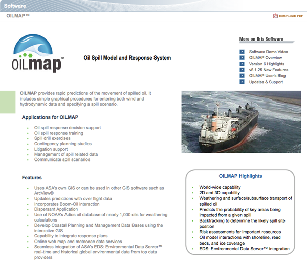